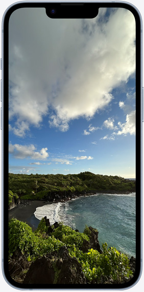

iOS 16이 잠금 화면에 자신만의 개성을 더하는 새롭고 재밌는 방식을 선보입니다. 레이어 효과로 사진을 돋보이게 할 수 있고, ‘활동’ 링을 보거나, 다양한 실시간 앱 정보를 확인할 수도 있죠. 
‘앱 추적 투명성’ 기능은 어떤 앱이 당신의 활동을 추적할 수 있는지를 당신이 직접 결정할 수 있게 해줍니다. 이는 무엇을 공유하고, 또 누구와 공유할지를 당신이 직접 제어할 수 있도록 iPhone이 설계되었다는 점을 여실히 보여주는 수많은 예 중 하나죠.